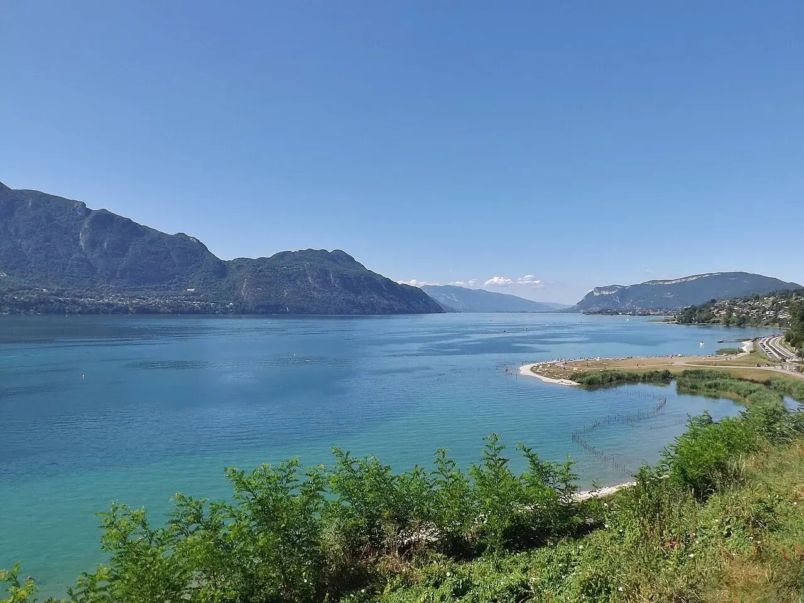

Lac du Bourget
Savoie, France · paddle, kayak, baignade

Entre Aix-les-Bains et la rive du mont du Chat, le lac du Bourget offre un décor de montagnes. Plusieurs plages et bases nautiques permettent d’organiser une sortie en eau douce.
- Lieu
- Savoie, France
- Niveau
- Variable selon les conditions
- Activités
- paddle, kayak, baignade
- Type d'eau
- lake
- Coordonnées
- 45.74, 5.86 (position approximative du secteur)
Ouvrir dans Ocean Buddy Télécharger sur l'App Store
Source : Préfecture de la Savoie.